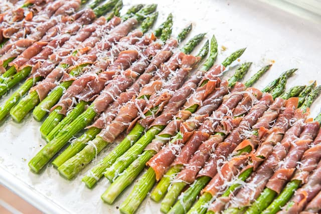

Prosciutto Wrapped Asparagus
>

Trying to step up your appetizer game? This quick recipe is all you need.
If you're like anyone else, events where you're expected to bring a
dish can seem overwhelming and even exhausting when trying to figure out what
to bring. This beautiful snack always looks great and takes only 20 minutes
to prep and cook!
Ingredients
- 1 lb thick asparagus spears
- 1/2 lb thinly sliced prosciutto
- fresh parmesan cheese
- olive oil
- salt
- pepper
Steps
- Preheat oven to 425F.
- Cut off the bottom white/purple parts of the asparagus stems.
- Place asparagus spears on a sheet pan, and drizzle with olive oil, salt,
and pepper. Toss well to coat evenly.
- Lay the prosciutto slices on a cutting board and cut each in half down the
length of the slice.
- Grate a thin layer of parmesan onto the slices of prosciutto.
- Roll each asparagus spear tightly into the parmesan
prosciutto, then arrange in a single layer on the sheet pan.
- Bake for 10 minutes. Start checking on them after 6/7 minutes - thin asparagus
will cook faster.
- Remove from oven and grate some more parmesan cheese on top. Then enjoy!